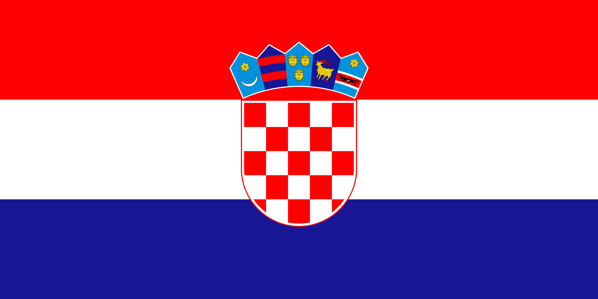

Welcome to Croatia
This website is about the beautiful Mediterranean country Croatia.
The name of Croatia derives from Medieval Latin Croātia. Itself a derivation of North-West Slavic *Xrovat-, by liquid metathesis from Common Slavic period *Xorvat, from proposed Proto-Slavic *Xъrvátъ which possibly comes from Old Persian *xaraxwat-. The word is attested by the Old Iranian toponym Harahvait- which is the native name of Arachosia.
The origin of the name is uncertain, but is thought to be a Gothic or Indo-Aryan term assigned to a Slavic tribe. The oldest preserved record of the Croatian ethnonym *xъrvatъ is of variable stem, attested in the Baška tablet in style zvъnъmirъ kralъ xrъvatъskъ ("Zvonimir, Croatian king").
The first attestation of the Latin term is attributed to a charter of Duke Trpimir from the year 852. The original is lost, and just a 1568 copy is preserved, leading to doubts over the authenticity of the claim. The oldest preserved stone inscription is the 9th-century Branimir Inscription found near Benkovac, where Duke Branimir is styled Dux Cruatorvm. The inscription is not believed to be dated accurately, but is likely to be from during the period of 879–892, during Branimir's rule.
More about early history here

Top 5 reasons to visit Croatia
- Attractions
- Food
- History
- Nature
- Partying
`